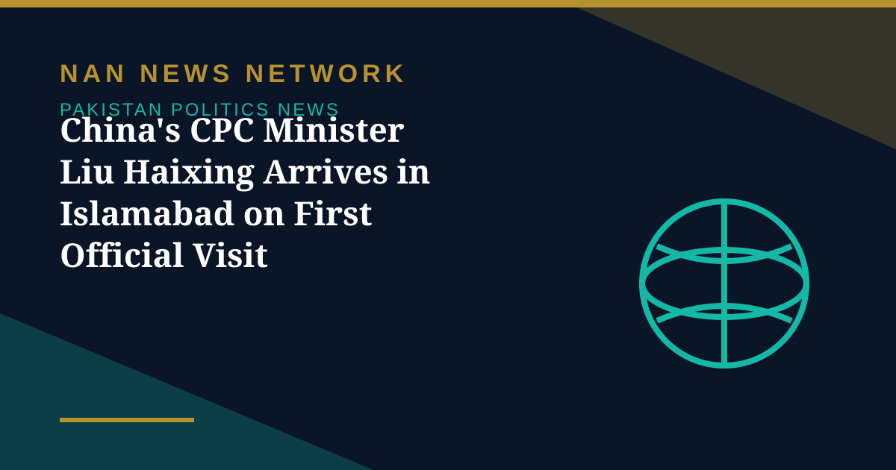

China's CPC Minister Liu Haixing Arrives in Islamabad on First Official Visit

Liu Haixing, minister of the International Department of the Communist Party of China (CPC) Central Committee, arrived in Islamabad on Sunday, November 1, on his first official visit to Pakistan, at the invitation of Deputy Prime Minister and Foreign Minister Ishaq Dar, the Foreign Office said, as reported by Arab News, 24NewsHD and DNA News Agency.
A meeting and a high-level event
During his visit, Liu will call on Pakistan's leadership and co-chair a high-level event with Dar on Monday, November 2, according to the Foreign Office statement. The International Department manages the CPC's relations with foreign political parties and organisations, and Liu assumed the post on September 30, 2025, 24NewsHD reported.
Party-to-party ties
The visit forms part of ongoing high-level and party-to-party exchanges between Pakistan and China, reflecting what the Foreign Office described as the two countries' shared commitment to further strengthening their All-Weather Strategic Cooperative Partnership. The statement framed the trip as adding momentum to bilateral ties and deepening mutual understanding on regional and international issues of common interest; no new agreements were announced in the reports of his arrival.
Sources: Arab News, 24NewsHD, DNA News Agency, Foreign Office statement, November 1, 2026
More on Pakistan Politics News
- PTI Hits Back at Shehbaz Sharif Over KP Criticism, Demands End to Governor's Rule
- PPP Courts Opposition to Join 30-Member Electoral Reforms Committee
- National Assembly Unanimously Passes Workplace Harassment Resolution as Parliament Is Prorogued
- National Assembly Passes Four Government Amendment Bills by Majority Vote
- Opposition Signals Willingness to Join Electoral Reforms Committee After PPP Outreach
- National Assembly Session Suspended After Speaker Finds House Lacks Quorum
- Pakistan Proposes Parliamentary Friendship Group With Turkmenistan
- Lahore High Court Judge Mohsin Akhtar Kayani Resigns, Citing Executive Grip on Judiciary
- Pakistan Says Afghan Firing Kills One in South Waziristan Border District
- Pakistan Marks Kashmir Black Day With Rallies Across the Country
- National Assembly Passes Seven Private Members' Bills, Sends Six to Committees
- Pakistan Strongly Condemns Houthi Missile Attacks Near Makkah and Madinah
- Pakistan, Saudi Arabia and Turkiye Reported to Hold Tehran Talks on De-escalation
- Pakistan LPG Shortage Worsens as Iran Border Crossings Close
- Pakistan Ends Machine-Readable Passports and Switches Fully to E-Passports
- Pakistan Calls for a Fairer Global Order at the United Nations